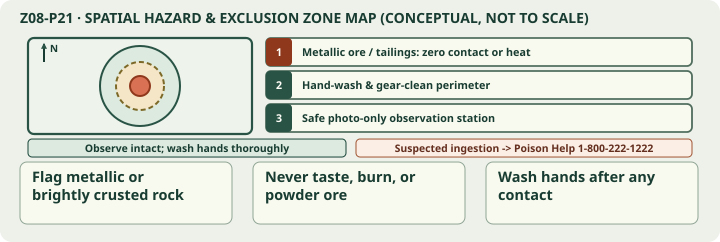

Z08-P21 · Rocks, minerals and materials · New manuscript
Sulfide Ores, Heavy-Metal Crusts and Mineral Toxicity
Avoid skin absorption, dust inhalation, and hand-to-mouth ingestion from unidentified metallic ores, sulfides, and mine tailings.
When it applies · Mineralized veins, brassy metallic rocks, colorful green/blue/yellow mineral crusts, and historic mining districts.
Equipment · Notebook, camera, wash water and soap.

Actions
- Treat brassy, silvery-gray heavy metallic crystals (such as galena, arsenopyrite, or pyrite) and bright yellow, green, or blue oxidized crusts as potentially toxic heavy-metal minerals.[R14]
- Never lick, taste, heat in a fire, or grind unidentified metallic minerals because lead, arsenic, mercury, and sulfur fumes cause acute or cumulative poisoning.[R14]
- Keep unidentified ores completely out of water vessels, cooking setups, and children reach, and wash hands thoroughly with soap after rock handling.[R12, R14]
Failure recognition · Heating sulfide-bearing rock in a campfire or handling lead-rich galena before eating introduces toxic fumes or heavy metals.[R14]
Verify · Unidentified metallic or oxidized specimens are photographed in place without breaking, heating, or hand-to-mouth contact.[R14, R19]
Stop or change course · Stop immediately and leave metallic veins, smelter slag, and brightly colored mineral crusts untouched; call Poison Control if accidental ingestion occurs.[R14, B09]
Evidence and editorial notes
- B09 · Minnesota Poison Control System · Poison Help 1-800-222-1222 and Regional Plant/Mushroom Guidance (Current web edition)
- Section: Minnesota Poison Control 1-800-222-1222 immediate referral · Conditions: Any suspected toxic plant, berry, root, or mushroom ingestion or severe dermal exposure
Support: Call 1-800-222-1222 immediately (or 911 for breathing difficulty, collapse, seizures, or altered alertness); do not wait for delayed symptoms.
Limitations: Never induce vomiting or administer home remedies unless explicitly instructed by Poison Control or EMS. · Conflicting evidence: None noted.
Editorial note: Mandatory Z05 poison-response escalation. · Specialist reviewer: Clinical toxicologist / Poison Center
Primary source · checked 2026-11-25 - R12 · U.S. EPA · Protect Your Family from Lead in Soil and Dust (2025)
- Section: Soil contamination and urban/industrial lead hazards · Conditions: Soils near historic structures, roadways, mines, or industrial sites
Support: Soils and clays near older painted structures, smelters, tailings, or roadways may harbor lead or industrial contaminants.
Limitations: Visual texture or color cannot detect lead, arsenic, or chemical contaminants; do not use unverified soil/clay for cookware or food contact. · Conflicting evidence: None noted.
Editorial note: Separates clay plasticity checks from chemical safety. · Specialist reviewer: Environmental health and soil scientist
Primary source · checked 2026-11-25 - R14 · USGS · National Minerals Information Center and Mineral Commodities (Current web edition)
- Section: Metallic ores, sulfides, and heavy-metal mineral toxicity · Conditions: Unidentified metallic-luster minerals, tailings, or bright oxidized crusts
Support: Sulfide ores and metallic minerals can contain lead, arsenic, mercury, or copper compounds hazardous via dust or hand-to-mouth transfer.
Limitations: Do not taste, lick, burn, or process unidentified metallic or brightly crusted minerals; wash hands after handling. · Conflicting evidence: None noted.
Editorial note: Blocks hazardous mineral extraction/handling. · Specialist reviewer: Geochemist and toxicologist
Primary source · checked 2026-11-25 - R19 · USGS · Collecting Rocks: Rock Classes and Mineral Property Basics (USGS GIP)
- Section: Specimen documentation, scale, and locality recording · Conditions: Documenting geological specimens for reference or museum review
Support: Recording locality, host formation, metric scale, fresh vs weathered surface, and non-destructive traits preserves scientific value.
Limitations: A photograph or hand sample without locality and scale rarely permits definitive identification of fine-grained rocks. · Conflicting evidence: None noted.
Editorial note: Defines Z08 specimen voucher protocol. · Specialist reviewer: Curatorial geologist
Primary source · checked 2026-11-25
Source lineage · New manuscript (Z08 P16 toxicity hazards) · Classification · New manuscript.